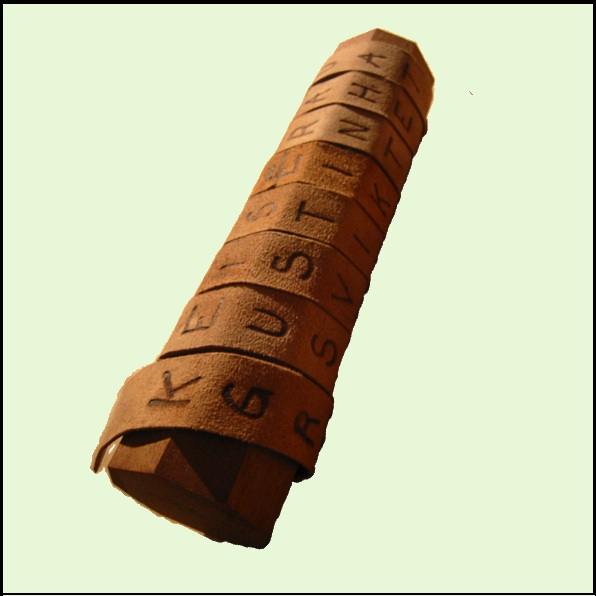

| Развитие шифров | Изобретения | Немного о... | На главную..>>|

Одним из первых физических приборов,
реализующих шифр перестановки, был
так называемый Прибор Сциталла
Бесспорно известно, что сцитала использовалась в войне
Спарты против Афин в конце V века до н.э.
Принцип её действия изложили Аполлоний Родосский (середина III века до н.э.)
и Плутарх (около 45–125 н.э.), но сохранилось лишь описание последнего.
Сцитала представляла собой длинный стержень, на который наматывалась лента из пергамента.
На ленту наносился текст вдоль оси сциталы, так, что после разматывания текст становился нечитаемым.
Для его восстановления требовалась сцитала такого же диаметра.
Считается, что автором способа взлома шифра сциталы является Аристотель,
который наматывал ленту на конусообразную палку до тех пор, пока не появлялись читаемые куски текста.